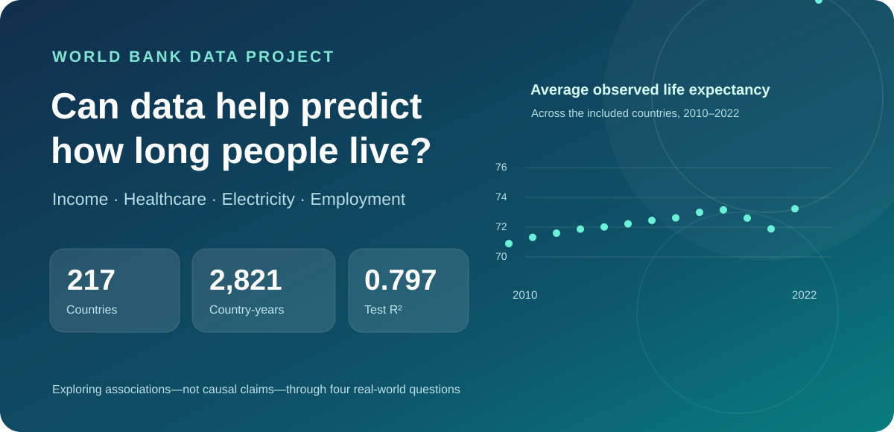
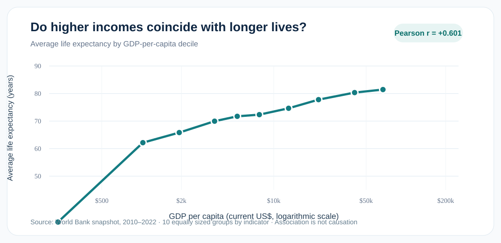
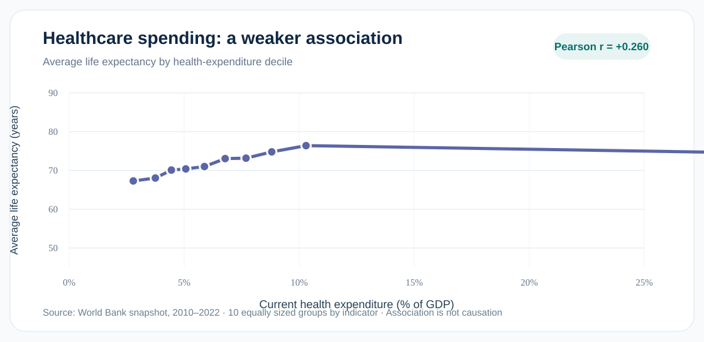
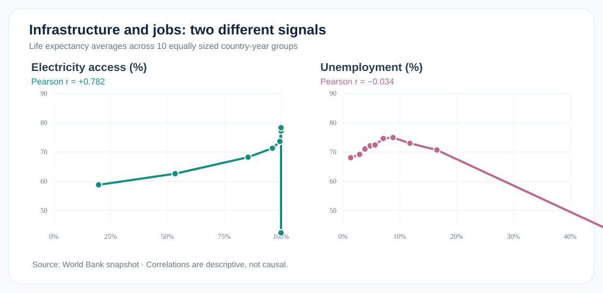
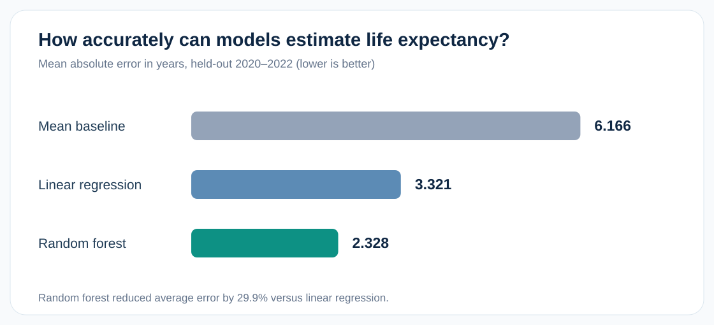

Can a Country's Economy Predict How Long People Live?

What 217 countries and economies, four socioeconomic indicators, and three prediction models can tell us—and what they cannot.
October 2026 · Data science project · Estimated reading time: 6 minutes
Why do people live longer in some countries than others? Could economic conditions or access to basic services provide clues? To explore these questions, I analyzed 2,821 country-year observations from 217 countries and economies using the World Bank World Development Indicators for 2010–2022.
The analysis uses four indicators: GDP per capita, healthcare expenditure as a share of GDP, access to electricity, and unemployment. I looked for descriptive patterns before using machine learning to estimate life expectancy in later years.
The result is a story told through four questions, four graphics, and a candid look at model limitations.
1. Do higher incomes coincide with longer lives?

Figure 1. Each point averages life expectancy for a similarly sized group of country-year observations, ordered by GDP per capita. Income uses a logarithmic scale.
Answer: Generally, yes. GDP per capita showed a positive Pearson correlation of +0.601 with life expectancy. Higher-income groups tended to have longer life expectancies.
Income was highly uneven across observations: median GDP per capita was about $6,730, compared with an average of about $18,445. The income–longevity relationship should not be assumed to be constant at every income level.
Crucially, this is a relationship in observational data. It does not prove that raising GDP directly causes longer lives.
2. Does spending more of GDP on healthcare mean people live longer?

Figure 2. Average life expectancy within deciles of healthcare spending as a percentage of GDP.
Answer: There is a positive association, but it is weaker. Healthcare spending as a percentage of GDP had a correlation of +0.260 with life expectancy.
This variable measures how much of an economy's output is spent on healthcare, not how much is spent per patient, how affordable care is, or how well healthcare systems work. It would be a mistake to conclude from this result that healthcare spending is unimportant.
3. Are electricity access and unemployment associated with life expectancy?

Figure 3. Two indicators, two very different descriptive patterns. Points represent average life expectancy in decile groups.
Answer: Electricity access shows a much stronger positive relationship. Its correlation with life expectancy was +0.782, the highest of the four studied indicators. Unemployment showed almost no overall linear association (−0.034).
| Socioeconomic indicator | Pearson correlation with life expectancy |
|---|---|
| Access to electricity (% of population) | +0.782 |
| GDP per capita (current US$) | +0.601 |
| Healthcare expenditure (% of GDP) | +0.260 |
| Unemployment (% of labor force) | −0.034 |
Access to reliable power can coincide with better infrastructure, but many national development factors occur together. These results describe correlations; they cannot isolate a causal effect from electricity or unemployment.
4. Can machine learning estimate life expectancy in future observations?

Figure 4. Error on held-out 2020–2022 observations. Lower is better.
Answer: Yes, for later-year records from countries already represented in the data. I trained three models on 2010–2019 and evaluated them on 2020–2022 without fitting the models on the test period.
| Model | Mean absolute error (years) | R² |
|---|---|---|
| Mean-only baseline | 6.166 | −0.004 |
| Linear regression | 3.321 | 0.664 |
| Random forest | 2.328 | 0.797 |
The random forest was the best of these three approaches, reducing average absolute error by about 29.9% compared with linear regression. Its R² of 0.797 means the predictions captured roughly 79.7% of the variation in this particular test sample.
The random forest emphasized electricity access (69.5% of its feature-importance scores) and GDP per capita (18.6%), but those importance scores are not measures of causation or the share of years lived.
What happens in a hypothetical scenario?
For a hypothetical country with GDP per capita $15,000, healthcare spending 7% of GDP, electricity access 100%, and unemployment 6%, the model estimated a life expectancy of 76.77 years. This is a demonstration of how the model responds to an input scenario—not a prediction that can be guaranteed for a real country.
An unexpected data-quality warning
Some observations were unusually volatile. An exploratory check found 10 country-year records with changes above 10 years from the preceding observation in the same country. Among them, a Central African Republic 2022 observation of 18.818 years led to the largest model error, around 36.35 years. The recorded value also appears in the World Bank-sourced FRED series; it deserves additional cross-source review rather than automatic deletion.
Three of the flagged observations occurred in the 651-row test set. Excluding those only as a sensitivity analysis lowered MAE from 2.328 to 2.252 and increased R² from 0.797 to 0.818. Because the flagging used actual outcomes, the original full-test metrics remain the primary evaluation.
What should we take away?
The clearest associations in this dataset were with access to electricity and income per person. Machine learning helped summarize these patterns and predict later records, but important limitations remain:
- Countries appear in both training and test periods; prediction accuracy for completely unseen countries was not measured.
- The test period includes 2020–2022, when global health disruptions may have affected outcomes.
- Important factors such as education, conflict, sanitation, and the quality of healthcare were not included in these four predictors.
- Correlation and feature importance cannot establish causal mechanisms.
The lesson is not that a few indicators explain life expectancy by themselves. It is that transparent analysis can help ask better questions—provided that we communicate uncertainty, data quality, and the limits of prediction.
Data and methods: World Bank World Development Indicators · Complete notebook, reproducible CSV and README on GitHub · 2010–2022 country-year data. All reported correlations are descriptive and observational.